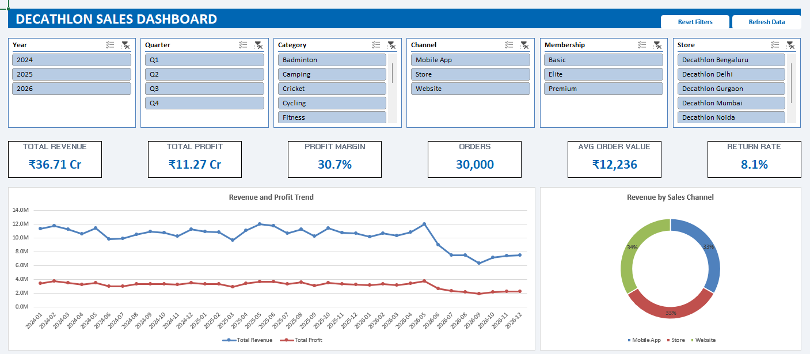

Ecommerce Sales Analysis
From 113,000+ raw orders to a clear view of sales, products, and delivery performance. Cleaned in Python, explored in MySQL, and brought together in Power BI.
Data analyst · India
Turning messy data into meaningful insights.
I explore data, find the patterns, and build dashboards that make the bigger picture a little clearer.
A few things I've been working on
From 113,000+ raw orders to a clear view of sales, products, and delivery performance. Cleaned in Python, explored in MySQL, and brought together in Power BI.

An interactive Excel dashboard exploring 30,000 synthetic retail orders. Six connected slicers bring sales, profit, returns, and promotions into focus.

A closer look at US retail sales across 2024–2025. Comparing products, retailers, and regions to uncover growth trends and track operating performance.
movies['profit'] =
movies['revenue'] - movies['budget']
Exploring the TMDB movie dataset to understand how budgets relate to revenue, and which genres earn the highest average profit.
Always learning. Always building something new.
The person behind the projects
Based in India
Hi, I'm Samridh — an aspiring data analyst with a background in pre-sales and project management. I'm bringing that business perspective into the world of data.
I enjoy working through the whole process: cleaning a messy dataset, asking useful questions, exploring the patterns, and turning the findings into a dashboard that tells a clear story.
My toolkit includes Python, SQL, Excel, Power BI, and Tableau. This space is a collection of what I'm learning and building along the way.
Find me on GitHub